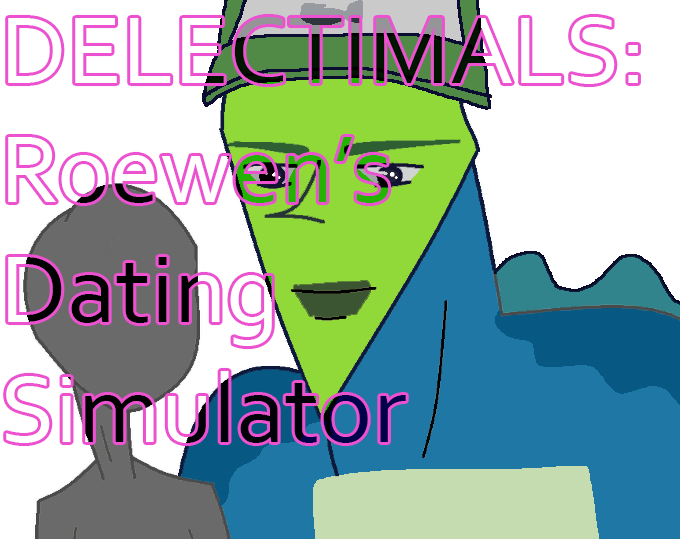

A short, low-effort, high-sovl thing I made for DELECTIMALS, a Discord MMORPG unrelated to anything you've ever heard of. 100% of the art was made by the DELECTIMALS team, except the above yaoi image, which I made. I think only one person has ever played this at time of writing, but I made it, so here it is.
Disclaimer from 2/20/2026 - I don't know if I'm good with the people behind DELECTIMALS anymore and I have no idea the state of the project, but I'm keeping this here for archival purposes.